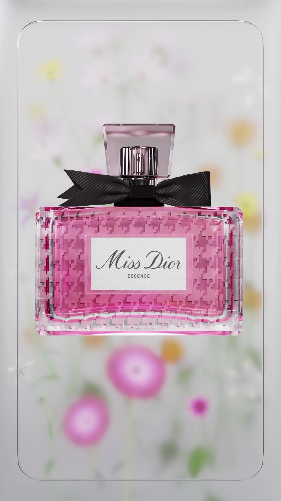

Blender materials, rebuilt.
Full derivations in MATERIALS.md. Live tweaks: __bottle.mat('Water 02.002', {roughness: .1}), __bottle.mats(), __bottle.only('glass.004').
MATERIALS.md
__bottle.mat('Water 02.002', {roughness: .1})
__bottle.mats()
__bottle.only('glass.004')